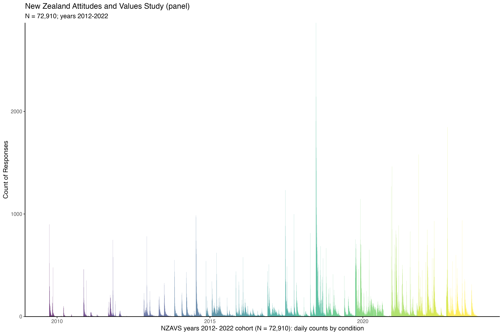

Causal Inference in Three-Wave Panel Designs
The Fundamental Problem of Causal Inference
Causality Requires a Contrast of Exposures
\[Y_{\text{you}}(1) - Y_{\text{you}}(0)\]
But Individuals Experience Only One Exposure
\[ Y_i|A_i = 1 \implies Y_i(0)|A_i = 1~ \text{is counterfactual} \]
Average Treatment Effect in Randomised Controlled Experiments Work From Assumptions
\[ \text{Average Treatment Effect} = \left[ \begin{aligned} &\left( \underbrace{\mathbb{E}[Y(1)|A = 1]}_{\text{observed}} + \textcolor{red}{\underbrace{\mathbb{E}[Y(1)|A = 0]}_{\text{unobserved}}} \right) \\ &- \left( \underbrace{\mathbb{E}[Y(0)|A = 0]}_{\text{observed}} + \textcolor{red}{\underbrace{\mathbb{E}[Y(0)|A = 1]}_{\text{unobserved}}} \right) \end{aligned} \right] \]
The Three Fundemental Assumptions of Causal Inference
Causal Consistency
\[ Y_i^{observed}|A_i = \begin{cases} Y_i(a^*) & \text{if } A_i = a^* \\ Y_i(a) & \text{if } A_i = a \end{cases} \]
Conditional Exchangeabilty
\[ Y(a) \coprod A | L \quad \text{or equivalently} \quad A \coprod Y(a) | L \]
Positivity
\[ 0 < Pr(A = a | L = l) < 1, \quad \forall a, l \text{ with } Pr(L = l) > 0 \]
Confounding
Common Cause
\[\commoncauseA\]
\[~\]
Common Cause: Longitudinal Solution
\[\commoncauseA\]
\[\commoncausesolvedA\]
Reverse Causation Solution
\[\ytoa\]
\[~\]
Reverse Causation Solution
\[\ytoa\]
\[\aandysolution\]
Mediator Bias
\[\mediatorA\]
\[~~\]
Mediator Bias Solution
\[\mediatorA\]
\[\commoncausesolvedA\]
Collider Bias
\[\colliderALONG\]
\[~~\]
Collider Bias Solution
\[\colliderALONG\]
\[\commoncausesolvedA\]
Collider Bias Proxy
\[\descendantBBLONG\]
\[~~\]
Collider Bias Proxy Solution
\[\descendantBBLONG\]
\[\commoncausesolvedchild\]
Post Exposure Collider Bias
\[\mediatorcollider\]
\[~~\]
Post Exposure Collider Bias Solution
\[\mediatorcollider\]
\[\commoncausesolvedA\]
Unmeasured Common Cause
\[\downstream\]
\[~~\]
Unmeasured Common Cause Solution
\[\downstream\]
\[\commoncausesolvedA\]
Longitudinal Data Bring Their Own Problems
Timing of Confounder
\[ \threeBshortTHREEWAVE \]
Timing of Mediator
\[ \threeBshortTHREEWAVE \]
Treatment Confounder Bias
\[\feedback\]
Treatment Confounder Feedback
\[\feedbackA\]
Treatment Confounder Feedback Variation
\[\feedbackA\]
Mediation
\[ \mediationfull \]
Fork Chain
\[\fork\]
\[\chain\]
The New Zealand Attitudes and Values Study
Planned 20-year longitudinal study, currently in its 14\(^{th}\) year.
Sample frame drawn randomly from NZ Electoral Roll.
Postal questionnaire (coverage; retention ~ 80%)
Large multidisciplinary research team (40 +)
Focus on personality, social attitudes, values, religion, employment, prejudice \(\dots\)
Current sample contains > 72,290,000 unique people, and ~ 38,000 in the longitudinal study


Key
\[\terminologylocalconventions\]
Thanks
Extra Slides
Interaction
Interaction: potential outcomes
\[\bigg(\underbrace{\mathbb{E}[Y(1,1)]}_{\text{joint exposure}} - \underbrace{\mathbb{E}[Y(0,0)]}_{\text{neither exposed}}\bigg) - \bigg[ \bigg(\underbrace{\mathbb{E}[Y(1,0)]}_{\text{only A exposed}} - \underbrace{\mathbb{E}[Y(0,0)]}_{\text{neither exposed}}\bigg) + \bigg(\underbrace{\mathbb{E}[Y(0,1)]}_{\text{only B exposed}} - \underbrace{\mathbb{E}[Y(0,0)]}_{\text{neither exposed}} \bigg)\bigg] \neq 0 \]
Interaction: simplifies to
\[ \underbrace{\mathbb{E}[Y(1,1)]}_{\text{joint exposure}} - \underbrace{\mathbb{E}[Y(1,0)]}_{\text{only A exposed}} - \underbrace{\mathbb{E}[Y(0,1)]}_{\text{only B exposed}} + \underbrace{\mathbb{E}[Y(0,0)]}_{\text{neither exposed}} \neq 0 \]
Mediation
Total Effect
\[ TE = \mathbb{E}[Y(1)] - \mathbb{E}[Y(0)] \]
\[~~\]
Total Effect Considering Mediator
\[ TE = \mathbb{E}[Y(1)] - \mathbb{E}[Y(0)] \]
\[ \mathbb{E}[Y(1)] = \mathbb{E}[Y(1, M(1))] \]
Natural Direct Effect
Natural Direct Effect (NDE) is the effect of the treatment on the outcome while maintaining the mediator at the level it would have been if the treatment had not been applied:
\[ NDE = \textcolor{blue}{\mathbb{E}[Y(1, M(0))]} - \mathbb{E}[Y(0, M(0))] \]
Natural Indirect Effect
Natural Indirect Effect (NIE): is the effect of the exposure on the outcome that is mediated. To obtain these quantities we must compare the potential outcome \(Y\) under treatment, where the mediator assumes its natural level under treatment with the potential outcome when the mediator assumes its natural value under no treatment is given:
\[ NIE = \mathbb{E}[Y(1, M(1))] - \textcolor{blue}{\mathbb{E}[Y(1, M(0))]} \]
Decomposition
\[ \text{Total Effect (TE)} = \underbrace{\bigg\{\mathbb{E}[Y(1, M(1))] - \textcolor{blue}{\mathbb{E}[Y(1, M(0))]}\bigg\}}_{\text{Natural Indirect Effect (NIE)}} + \underbrace{\bigg\{\textcolor{blue}{\mathbb{E}[Y(1, M(0))]} - \mathbb{E}[Y(0, M(0))]\bigg\}}_{\text{Natural Direct Effect (NDE)}} \]
Why Mediation is Difficult
$$
$$